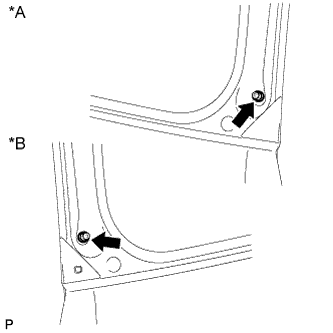
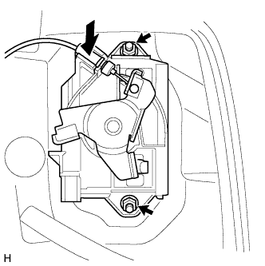
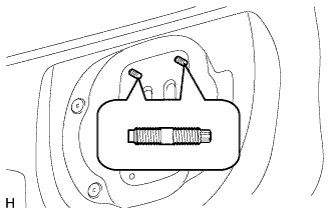
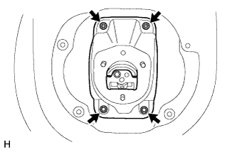
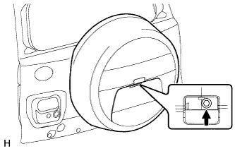

ДВЕРЬ БАГАЖНОГО ОТДЕЛЕНИЯ > ПОВТОРНАЯ СБОРКА |
| 1. УСТАНОВИТЕ ЛАМПУ ОСВЕЩЕНИЯ НОМЕРНОГО ЗНАКА В СБОРЕ |
Для моделей без кронштейна запасного колеса на двери багажного отделения:
Установите лампу освещения номерного знака в сборе (Нажмите здесь).
Для моделей с кронштейном запасного колеса на двери багажного отделения:
Установите лампу освещения номерного знака в сборе (Нажмите здесь).
| 2. УСТАНОВИТЕ ВЫКЛЮЧАТЕЛЬ ЭЛЕКТРОННОГО КЛЮЧА НА ДВЕРИ БАГАЖНОГО ОТДЕЛЕНИЯ (для моделей с кронштейном запасного колеса на двери багажного отделения) |
 |
Введите в зацепление 2 направляющих, чтобы установить выключатель электронного ключа на двери багажного отделения.
Заверните 2 винта.
| 3. УСТАНОВИТЕ ВЫКЛЮЧАТЕЛЬ ЭЛЕКТРОННОГО КЛЮЧА НА ДВЕРИ БАГАЖНОГО ОТДЕЛЕНИЯ (для моделей без кронштейна запасного колеса на двери багажного отделения) |
 |
Введите в зацепление 2 направляющих, чтобы установить выключатель электронного ключа на двери багажного отделения.
Заверните 2 винта.
 |
Закрепите зажим.
| 4. УСТАНОВИТЕ КОЛПАК ЛАМПЫ ОСВЕЩЕНИЯ ЗАДНЕГО НОМЕРНОГО ЗНАКА |
Установите колпак лампы освещения заднего номерного знака и закрепите его 5 винтами.
| 5. УСТАНОВИТЕ ФИКСАТОР ОБЛИЦОВКИ ДВЕРИ БАГАЖНОГО ОТДЕЛЕНИЯ № 1 (для моделей без кронштейна запасного колеса на двери багажного отделения) |
Установите фиксатор облицовки двери багажного отделения № 1 и закрепите его 3 винтами.
| 6. УСТАНОВИТЕ ШНУР ЛАМПЫ ОСВЕЩЕНИЯ НОМЕРНОГО ЗНАКА (для моделей без системы посадки и запуска) |
Для моделей без кронштейна запасного колеса на двери багажного отделения:
Установите шнур лампы освещения номерного знака (Нажмите здесь).
Для моделей с кронштейном запасного колеса на двери багажного отделения:
Установите шнур лампы освещения номерного знака (Нажмите здесь).
| 7. УСТАНОВИТЕ НАРУЖНУЮ НАКЛАДКУ ДВЕРИ БАГАЖНОГО ОТДЕЛЕНИЯ В СБОРЕ |
Для моделей без кронштейна запасного колеса на двери багажного отделения:
Установите наружную облицовку двери багажного отделения (Нажмите здесь).
Для моделей с кронштейном запасного колеса на двери багажного отделения:
Установите наружную облицовку двери багажного отделения (Нажмите здесь).
| 8. УСТАНОВИТЕ ЛЕВЫЙ НИЖНИЙ КРОНШТЕЙН КРЕПЛЕНИЯ АМОРТИЗАТОРА ДВЕРИ БАГАЖНОГО ОТДЕЛЕНИЯ |
Со стороны бампера:
Установите новый ограничитель открывания двери багажного отделения на нижний кронштейн крепления амортизатора двери багажного отделения.
Со стороны двери багажного отделения:
Установите ограничитель открывания двери багажного отделения на нижний кронштейн крепления амортизатора двери багажного отделения.
Убедитесь, что ограничитель открывания двери багажного отделения надежно соединен с шаровым шарниром и не вытягивается.
| 9. УСТАНОВИТЕ ОГРАНИЧИТЕЛЬ ОТКРЫВАНИЯ ДВЕРИ БАГАЖНОГО ОТДЕЛЕНИЯ |
Со стороны бампера:
 |
Установите ограничитель открывания двери багажного отделения с нижним кронштейном крепления амортизатора двери багажного отделения и закрепите его 2 болтами A.
Вверните болт B.
Закрепите жгут проводов.
Со стороны двери багажного отделения:
 |
Присоедините фиксатор, чтобы установить ограничитель открывания двери багажного отделения с нижним кронштейном крепления амортизатора двери багажного отделения.
Вверните 2 болта.
| 10. УСТАНОВИТЕ ПОДКЛАДКУ ДВЕРИ БАГАЖНОГО ОТДЕЛЕНИЯ (для моделей с кронштейном запасного колеса на двери багажного отделения) |
Установите 3 подкладки двери багажного отделения.
| 11. УСТАНОВИТЕ СТЕКЛО ДВЕРИ БАГАЖНОГО ОТДЕЛЕНИЯ (для моделей без кронштейна запасного колеса на двери багажного отделения) |
Установите стекло двери багажного отделения и закрепите его 4 болтами.
Введите в зацепление 2 зажима и установите разъем.
| 12. УСТАНОВИТЕ ЛЕВУЮ СТОЙКУ ЗАДНЕГО ОКНА В СБОРЕ (для моделей без кронштейна запасного колеса на двери багажного отделения) |
Установите 2 стопорных кольца на кронштейн двери багажного отделения.
 |
Установите стойку заднего стекла в сборе.
Убедитесь, что стойка заднего стекла вошла в зацепление с шаровыми шарнирами и не вытягивается.
| 13. УСТАНОВИТЕ ПРАВУЮ СТОЙКУ ЗАДНЕГО ОКНА В СБОРЕ (для моделей без кронштейна запасного колеса на двери багажного отделения) |
| 14. УСТАНОВИТЕ КРЫШКУ ЗАЩЕЛКИ ЗАМКА ДВЕРИ БАГАЖНОГО ОТДЕЛЕНИЯ (для моделей без кронштейна запасного колеса на двери багажного отделения) |
При замене болта кронштейна двери багажного отделения:
Очистите резьбовую часть кузова растворителем, не содержащим смолистых веществ.
|  |
Вверните 2 болта кронштейна двери багажного отделения.
| *A | Для правой стороны |
| *B | Для левой стороны |
При повторном использовании болта кронштейна двери багажного отделения:
Очистите резьбовую часть кузова растворителем, не содержащим смолистых веществ.
Нанесите герметик на резьбу болта кронштейна двери багажного отделения.
Вверните 2 болта кронштейна двери багажного отделения.
| 15. УСТАНОВИТЕ КРОНШТЕЙН ЭЛЕКТРОДВИГАТЕЛЯ СТЕКЛООЧИСТИТЕЛЯ ОКНА ДВЕРИ БАГАЖНОГО ОТДЕЛЕНИЯ № 1 (для моделей с кронштейном запасного колеса на двери багажного отделения) |
 |
Введите в зацепление 2 фиксатора, чтобы установить кронштейн электродвигателя стеклоочистителя окна двери багажного отделения № 1.
Вверните 3 болта.
Присоедините зажим шланга омывателя.
| 16. УСТАНОВИТЕ ДВИГАТЕЛЬ ЗАДНЕГО СТЕКЛООЧИСТИТЕЛЯ В СБОРЕ |
Введите в зацепление 2 направляющих, временно установите электродвигатель заднего стеклоочистителя в сборе и закрепите его 3 болтами.
Затяните 3 болта.
Подсоедините разъем.
| 17. УСТАНОВИТЕ РЫЧАГ ЗАДНЕГО СТЕКЛООЧИСТИТЕЛЯ |
 |
Очистите зубчатую часть рычага стеклоочистителя.
| *1 | Зубчатое соединение оси вращения стеклоочистителя |
 |
Почистите зубчатую часть оси вращения стеклоочистителя проволочной щеткой.
| *1 | Зубчатая часть оси вращения стеклоочистителя |
| *2 | Проволочная щетка |
Включите задний стеклоочиститель и остановите электродвигатель заднего стеклоочистителя в положении автоматическтого ограничителя хода.
 |
Совместите край лопасти с отметкой на стекле, как показано на рисунке.
| Область | Нормальное состояние |
| a | 10,0 мм (0,394 дюйма) |
| b | 10,0 мм (0,394 дюйма) |
| *A | для моделей без кронштейна запасного колеса на двери багажного отделения |
| *B | для моделей с кронштейном запасного колеса на двери багажного отделения |
| *1 | Керамическая метка |
| *a | Верхняя граница |
| *b | Нижняя граница |
Установите рычаг и щетку левого заднего стеклоочистителя и закрепите их гайкой.
| 18. УСТАНОВИТЕ ФОРСУНКУ ЗАДНЕГО СТЕКЛООМЫВАТЕЛЯ В СБОРЕ |
Введите в зацепление 2 захвата и установите форсунку омывателя.
Подсоедините шланг.
| 19. УСТАНОВИТЕ ЖЕСТКУЮ ПОДКЛАДКУ ДВЕРИ БАГАЖНОГО ОТДЕЛЕНИЯ № 2 (для моделей с кронштейном запасного колеса на двери багажного отделения) |
Введите в зацепление 2 захвата, чтобы установить новую жесткую подкладку двери багажного отделения № 2.
| 20. УСТАНОВИТЕ ЗАДНИЙ СПОЙЛЕР В СБОРЕ |
Для моделей без кронштейна запасного колеса на двери багажного отделения:
Установите задний спойлер в сборе (Нажмите здесь).
Для моделей с кронштейном запасного колеса на двери багажного отделения:
Установите задний спойлер в сборе (Нажмите здесь).
| 21. УСТАНОВИТЕ ПРАВУЮ ПАНЕЛЬ ЗАДНЕГО СПОЙЛЕРА |
Введите в зацепление 2 фиксатора, чтобы установить панель заднего спойлера.
| 22. УСТАНОВИТЕ ПАНЕЛЬ ЗАДНЕГО СПОЙЛЕРА № 1 (для моделей без кронштейна запасного колеса на двери багажного отделения) |
Закрепите 5 фиксаторов и крепежную ленту, чтобы установить задний спойлер № 1.
| 23. УСТАНОВИТЕ ЗАМОК ЗАДНЕГО ОКНА В СБОРЕ (для моделей без кронштейна запасного колеса на двери багажного отделения) |
Установите замок заднего окна в сборе и закрепите его 3 болтами.
Подсоедините разъем.
| 24. УСТАНОВИТЕ ПОДКЛАДКУ ПАНЕЛИ ДВЕРИ БАГАЖНОГО ОТДЕЛЕНИЯ (для моделей без кронштейна запасного колеса на двери багажного отделения) |
Установите 4 подкладки панели двери багажного отделения.
| 25. УСТАНОВИТЕ УПОР ДВЕРИ БАГАЖНОГО ОТДЕЛЕНИЯ № 1 |
Введите в зацепление 2 захвата, чтобы установить новый упор двери багажного отделения № 1.
| 26. УСТАНОВИТЕ ПОДКЛАДКУ УПОРА ДВЕРИ БАГАЖНОГО ОТДЕЛЕНИЯ № 2 |
Введите в зацепление захват, чтобы установить подкладку упора двери багажного отделения № 2.
| 27. УСТАНОВИТЕ ЛЕВЫЙ ОХВАТЫВАЮЩИЙ БОКОВОЙ УПОР ДВЕРИ БАГАЖНОГО ОТДЕЛЕНИЯ В СБОРЕ |
 |
Установите охватывающий боковой упор двери багажного отделения и закрепите его 2 болтами.
| 28. УСТАНОВИТЕ УПЛОТНИТЕЛЬ ДВЕРИ БАГАЖНОГО ОТДЕЛЕНИЯ № 2 (для моделей без кронштейна запасного колеса на двери багажного отделения) |
Совместите метку совмещения на уплотнителе с выступающей частью кузова, указанной стрелкой на рисунке, и установите уплотнитель двери багажного отделения № 2.
| *1 | Стык уплотнителя |
| *2 | Метка, нанесенная краской (белая) |
| *3 | Метка, нанесенная краской (голубая) |
| 29. УСТАНОВИТЕ КРЫШКУ ВЫКЛЮЧАТЕЛЯ (для моделей без кронштейна запасного колеса на двери багажного отделения) |
Установите крышку выключателя.
| 30. УСТАНОВИТЕ ВЫКЛЮЧАТЕЛЬ МЕХАНИЗМА ОТКРЫВАНИЯ ЗАДНЕГО СТЕКЛА В СБОРЕ (для моделей без кронштейна запасного колеса на двери багажного отделения) |
Установите выключатель механизма открывания и закрепите его винтом.
| 31. УСТАНОВИТЕ ЛЕВУЮ НИЖНЮЮ НАРУЖНУЮ ОБЛИЦОВКУ ДВЕРИ БАГАЖНОГО ОТДЕЛЕНИЯ В СБОРЕ (для моделей без кронштейна запасного колеса на двери багажного отделения) |
Очистите поверхность кузова автомобиля.
С помощью нагревательной лампы разогрейте поверхность кузова.
Удалите ленту с помощью моющего средства.
Установите новую наружную облицовку.
С помощью нагревательной лампы разогрейте кузов и облицовку.
Снимите отслаивающуюся бумагу с поверхности наружной облицовки.
Введите в зацепление 5 захватов для крепления облицовки.
Заверните винт.
Установите зажим и подсоедините разъем.
| 32. УСТАНОВИТЕ ПРАВУЮ НИЖНЮЮ НАРУЖНУЮ ОБЛИЦОВКУ ДВЕРИ БАГАЖНОГО ОТДЕЛЕНИЯ В СБОРЕ (для моделей без кронштейна запасного колеса на двери багажного отделения) |
Очистите поверхность кузова автомобиля.
С помощью нагревательной лампы разогрейте поверхность кузова.
| Параметр / Устройство | Температура |
| Кузов автомобиля | 40 - 60°C (104 - 140°F) |
Удалите остатки клейкой ленты чистящим средством.
Установите новую правую нижнюю наружную облицовку двери багажного отделения в сборе.
С помощью нагревательной лампы прогрейте кузов автомобиля и новую правую нижнюю наружную облицовку двери багажного отделения.
Удалите прокладочную бумагу с поверхности правой нижней наружной облицовки двери багажного отделения.
Закрепите 4 захвата, чтобы установить правую нижнюю наружную облицовку двери багажного отделения, и вверните винт.
| 33. УСТАНОВИТЕ МОЛДИНГ ЛЕВОЙ НИЖНЕЙ НАРУЖНОЙ ОБЛИЦОВКИ ДВЕРИ БАГАЖНОГО ОТДЕЛЕНИЯ (для моделей без кронштейна запасного колеса на двери багажного отделения) |
Введите в зацепление 4 захвата, чтобы установить молдинг наружной облицовки.
| 34. УСТАНОВИТЕ МОЛДИНГ ПРАВОЙ НИЖНЕЙ НАРУЖНОЙ ОБЛИЦОВКИ ДВЕРИ БАГАЖНОГО ОТДЕЛЕНИЯ (для моделей без кронштейна запасного колеса на двери багажного отделения) |
Введите в зацепление 5 захватов, чтобы установить молдинг правой нижней наружной облицовки двери багажного отделения.
| 35. УСТАНОВИТЕ ФИКСАТОР ОБЛИЦОВКИ ДВЕРИ БАГАЖНОГО ОТДЕЛЕНИЯ № 2 (для моделей без кронштейна запасного колеса на двери багажного отделения, без системы монитора заднего вида) |
Установите фиксатор облицовки двери багажного отделения № 2 на панель двери и закрепите его 2 винтами.
| 36. УСТАНОВИТЕ ЗАДНЮЮ ТЕЛЕКАМЕРУ В СБОРЕ (для моделей без кронштейна запасного колеса на двери багажного отделения, с системой монитора заднего вида) |
Установите заднюю телекамеру и закрепите ее 2 болтами.
Подсоедините разъем.
| 37. УСТАНОВИТЕ ЖГУТ ПРОВОДОВ ЗАДНЕГО ОКНА № 1 (для моделей с кронштейном запасного колеса на двери багажного отделения, с системой монитора заднего вида) |
 |
Введите в зацепление 2 зажима, чтобы установить жгут проводов заднего окна № 1.
| *a | Наружная сторона |
| *b | Внутренняя сторона |
Подсоедините разъем.
| 38. УСТАНОВИТЕ ТРОС УПРАВЛЕНИЯ ЗАМКОМ ДВЕРИ БАГАЖНОГО ОТДЕЛЕНИЯ В СБОРЕ |
Подсоедините кабель.
| 39. УСТАНОВИТЕ ЗАМОК ДВЕРИ БАГАЖНОГО ОТДЕЛЕНИЯ В СБОРЕ |
 |
Подсоедините кабель.
Установите новое уплотнение жгута проводов замка двери на замок передней двери в сборе.
 |
Установите замок двери багажного отделения и закрепите его 3 винтами с помощью торцевого ключа "TORX" T30.
| *A | для моделей в стандартной комплектации |
| *B | для моделей с кронштейном запасного колеса на двери багажного отделения, с противоположно расположенными сиденьями |
Подсоедините разъем.
| 40. УСТАНОВИТЕ ЛЕВУЮ НАРУЖНУЮ РУЧКУ ДВЕРИ БАГАЖНОГО ОТДЕЛЕНИЯ |
Для моделей с кронштейном запасного колеса на двери багажного отделения:
 |
Подсоедините кабель.
Установите наружную ручку двери багажного отделения и закрепите ее 2 гайками.
Вставьте пробку отверстия.
| *1 | Пробка отверстия |
Для моделей без кронштейна запасного колеса на двери багажного отделения:
|  |
Подсоедините кабель.
Установите наружную ручку двери багажного отделения и закрепите ее 2 гайками.
| 41. УСТАНОВИТЕ КРЫШКУ ТЕХНОЛОГИЧЕСКОГО ОТВЕРСТИЯ ДВЕРИ БАГАЖНОГО ОТДЕЛЕНИЯ |
 |
Наклейте новую бутиловую ленту на панель задней двери багажного отделения.
Закрепите крышку технологического отверстия задней двери, используя контрольные точки на панели задней двери.
| *1 | Контрольная точка |
| 42. УСТАНОВИТЕ КРОНШТЕЙН ЯЩИКА ДЛЯ ИНСТРУМЕНТОВ |
 |
Установите 2 кронштейна ящика для инструментов и закрепите их 4 болтами.
| 43. УСТАНОВИТЕ ВНУТРЕННЮЮ РУЧКУ ДВЕРИ БАГАЖНОГО ОТДЕЛЕНИЯ В СБОРЕ (для моделей с противоположно расположенными сиденьями) |
 |
Подсоедините 2 троса к внутренней ручке в сборе.
Введите в зацепление захваты и направляющую, чтобы установить внутреннюю ручку в сборе.
| 44. УСТАНОВИТЕ ПАНЕЛЬ ОБЛИЦОВКИ ДВЕРИ БАГАЖНОГО ОТДЕЛЕНИЯ В СБОРЕ |
Для моделей без кронштейна запасного колеса на двери багажного отделения:
Введите в зацепление 15 фиксаторов, чтобы установить облицовочную панель двери багажного отделения.
Вверните болт.
Для моделей с кронштейном запасного колеса на двери багажного отделения:
Введите в зацепление 16 фиксаторов, чтобы установить облицовочную панель двери багажного отделения.
Вверните болт.
Для моделей с противоположно расположенными сиденьями:
Введите в зацепление 15 фиксаторов, чтобы установить облицовочную панель двери багажного отделения.
Вверните болт.
Заверните винт.
Введите в зацепление захват, чтобы установить крышку.
| 45. УСТАНОВИТЕ ДЕРЖАТЕЛЬ ВНУТРЕННЕЙ РУЧКИ ДВЕРИ БАГАЖНОГО ОТДЕЛЕНИЯ (для моделей с противоположно расположенными сиденьями) |
Введите в зацепление 5 захватов, чтобы установить оправу внутренней ручки двери багажного отделения.
Вверните винт.
| 46. УСТАНОВИТЕ КРЫШКУ ЗАМКА ДВЕРИ БАГАЖНОГО ОТДЕЛЕНИЯ (для моделей без кронштейна запасного колеса на двери багажного отделения) |
Введите в зацепление 6 захватов, чтобы установить крышку замка двери багажного отделения.
| 47. УСТАНОВИТЕ ЯЩИК ДЛЯ ИНСТРУМЕНТОВ |
Введите в зацепление 2 захвата, чтобы установить ящик для инструментов.
| 48. УСТАНОВИТЕ ВЕРХНЮЮ ПАНЕЛЬ ЯЩИКА ДЛЯ ИНСТРУМЕНТОВ В СБОРЕ |
 |
Введите в зацепление 3 захвата.
Установите верхнюю панель ящика для инструментов, как показано на рисунке.
| 49. УСТАНОВИТЕ ОБЛИЦОВОЧНУЮ НАКЛАДКУ ДВЕРИ БАГАЖНОГО ОТДЕЛЕНИЯ |
 |
Введите в зацепление 4 захвата.
Установите облицовочную накладку двери багажного отделения, как показано на рисунке.
| 50. УСТАНОВИТЕ ЛЕВУЮ БОКОВУЮ ОБЛИЦОВКУ ДВЕРИ БАГАЖНОГО ОТДЕЛЕНИЯ |
Установите боковую облицовку двери багажного отделения, закрепив ее 2 фиксаторами.
| 51. УСТАНОВИТЕ ПРАВУЮ БОКОВУЮ ОБЛИЦОВКУ ДВЕРИ БАГАЖНОГО ОТДЕЛЕНИЯ |
Установите боковую облицовку двери багажного отделения, закрепив ее 2 фиксаторами.
| 52. УСТАНОВИТЕ ЦЕНТРАЛЬНУЮ ОБЛИЦОВКУ ДВЕРИ БАГАЖНОГО ОТДЕЛЕНИЯ |
Введите в зацепление 4 фиксатора и установите центральную облицовку двери багажного отделения.
| 53. УСТАНОВИТЕ КРОНШТЕЙН ЗАПАСНОГО КОЛЕСА В СБОРЕ(для моделей с кронштейном запасного колеса на двери багажного отделения) |
|  |
С помощью торцевого ключа "TORX" Е10 вверните 2 резьбовые шпильки.
|  |
Установите кронштейн запасного колеса в сборе закрепите его 2 болтами и 2 гайками.
| 54. УСТАНОВИТЕ ЗАДНЮЮ ТЕЛЕКАМЕРУ В СБОРЕ (для моделей с кронштейном запасного колеса на двери багажного отделения, с системой монитора заднего вида) |
Установите заднюю телекамеру и закрепите ее болтом.
Подсоедините разъем, чтобы установить жгут проводов заднего окна № 2.
| 55. УСТАНОВИТЕ КРОНШТЕЙН ТЕЛЕКАМЕРЫ (для моделей с кронштейном запасного колеса на двери багажного отделения, без системы монитора заднего вида) |
Установите заднюю телекамеру и закрепите ее болтом.
Подсоедините разъем, чтобы установить жгут проводов заднего окна № 2.
| 56. УСТАНОВИТЕ ЧЕХОЛ ЗАПАСНОГО КОЛЕСА № 2 (для моделей с кронштейном запасного колеса на двери багажного отделения) |
 |
Установите чехол запасного колеса № 2 и закрепите его 4 винтами.
| 57. УСТАНОВИТЕ ЗАПАСНОЕ КОЛЕСО (для моделей с кронштейном запасного колеса на двери багажного отделения) |
| 58. УСТАНОВИТЕ ЧЕХОЛ ЗАПАСНОГО КОЛЕСА (для моделей с кронштейном запасного колеса на двери багажного отделения) |
 |
Введите в зацепление 8 захватов, чтобы установить чехол запасного колеса.
Переместите рычаг.
|  |
Заверните болт.
| 59. УСТАНОВИТЕ НАКЛАДКУ ЧЕХЛА ЗАПАСНОГО КОЛЕСА (для моделей с кронштейном запасного колеса на двери багажного отделения) |
Введите в зацепление 7 захватов, чтобы закрепить накладку чехла запасного колеса.